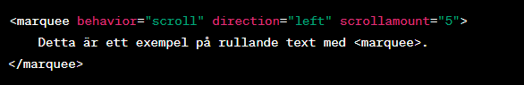
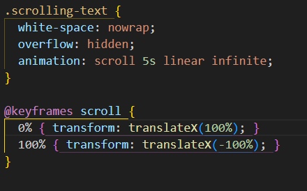

Trendig HTML innebär att använda de senaste och bästa praxis inom HTML-kodning för att skapa moderna webbsidor, Det inkluderar semantisk HTML.
Exempel på semantisik HTML är responsiv design, progressiv förbättring, användning av nya HTML5-element, implementering av webbkomponenter och optimering för tillgänglighet.
Genom att följa dessa trender kan utcklare skapa webssidor som är välstruktuera, anpassnigsbara för olika enheter, progressivt förbättrande, och samtidigt tar hänsyn till tillgänglighetapsekter.
| Nya HTML5-element | Funktion |
|---|---|
| <article> | Används för att definiera innehåll som är självständigt och komplett, vilket kan vara en nyhetshistoria, ett blogginlägg eller kommentar. Det kan återanvändas och placeras oberoende på sidan. |
| <section> | Används för att dela upp och gruppera innehåll i logiska sektioner. Varje avsnitt kan ha sin egen rubrik och underavsnitt. Det hjälper att orgnisera och strukturera sidans innehåll. |
| <figure> <figurecaption> | <figure> Används för att inkludera medier, som bilder, diagram, inom dokumentet. Det används ofta tillsammans med <figurecaption> för att lägga till en bildtext eller beskrivning |
| <Main> | Används för att markera det huvudsakliga innehållet på en webbsida. Det indikerar vilket innehåll som är unikt för varje sida och är särskilt användbart för tillgänglighet och sökmotoroptimering. |
<Marquee> var ett populärt HTML-element förr, som användes för att skapa rullande eller rörlig text eller innehåll på en webbsida. Detta element har dock blivit föråldrat och får inte längre användas. Istället bör CSS-egenskaper och animationer användas för att uppnå liknande effekter.
Nedan är ett exempel på hur <Marquee> användes förr:
Som sagt ska användningen av <Marquee> inte längre ske och istället används moderna metoder som CSS-animationer.
Nedan är ett exempel på hur man kan skapa en liknande rörelseeffekt som <Marquee> hade med CSS istället:
html Dokumentet:
CSS Dokumentet:
Detta är hur det ser ut när man skrivit in det i ett html dokument och CSS dokument: